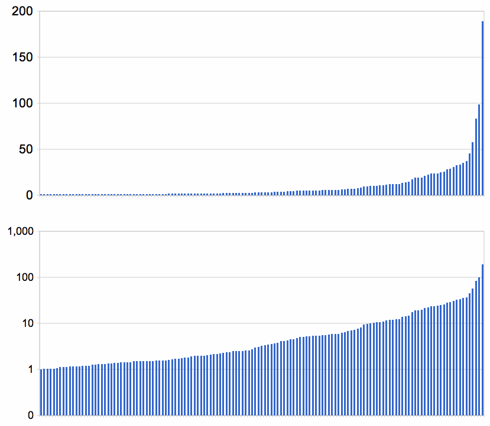

A puzzle is solved if the squares in each unit are filled with a permutation of the digits 1 to 9.That is, no digit can appear twice in a unit, and every digit must appear once. This implies that each square must have a different value from any of its peers. Here are the names of the squares, a typical puzzle, and the solution to the puzzle:
A1 A2 A3| A4 A5 A6| A7 A8 A9 4 . . |. . . |8 . 5 4 1 7 |3 6 9 |8 2 5 B1 B2 B3| B4 B5 B6| B7 B8 B9 . 3 . |. . . |. . . 6 3 2 |1 5 8 |9 4 7 C1 C2 C3| C4 C5 C6| C7 C8 C9 . . . |7 . . |. . . 9 5 8 |7 2 4 |3 1 6 ---------+---------+--------- ------+------+------ ------+------+------ D1 D2 D3| D4 D5 D6| D7 D8 D9 . 2 . |. . . |. 6 . 8 2 5 |4 3 7 |1 6 9 E1 E2 E3| E4 E5 E6| E7 E8 E9 . . . |. 8 . |4 . . 7 9 1 |5 8 6 |4 3 2 F1 F2 F3| F4 F5 F6| F7 F8 F9 . . . |. 1 . |. . . 3 4 6 |9 1 2 |7 5 8 ---------+---------+--------- ------+------+------ ------+------+------ G1 G2 G3| G4 G5 G6| G7 G8 G9 . . . |6 . 3 |. 7 . 2 8 9 |6 4 3 |5 7 1 H1 H2 H3| H4 H5 H6| H7 H8 H9 5 . . |2 . . |. . . 5 7 3 |2 9 1 |6 8 4 I1 I2 I3| I4 I5 I6| I7 I8 I9 1 . 4 |. . . |. . . 1 6 4 |8 7 5 |2 9 3
Every square has exactly 3 units and 20 peers. For example, here are the units and peers for the square C2:
A2 | | | | A1 A2 A3| |
B2 | | | | B1 B2 B3| |
C2 | | C1 C2 C3| C4 C5 C6| C7 C8 C9 C1 C2 C3| |
---------+---------+--------- ---------+---------+--------- ---------+---------+---------
D2 | | | | | |
E2 | | | | | |
F2 | | | | | |
---------+---------+--------- ---------+---------+--------- ---------+---------+---------
G2 | | | | | |
H2 | | | | | |
I2 | | | | | |
We can implement the notions of units, peers, and squares in
the programming language Python (2.5 or later) as
follows:
def cross(A, B):
"Cross product of elements in A and elements in B."
return [a+b for a in A for b in B]
digits = '123456789'
rows = 'ABCDEFGHI'
cols = digits
squares = cross(rows, cols)
unitlist = ([cross(rows, c) for c in cols] +
[cross(r, cols) for r in rows] +
[cross(rs, cs) for rs in ('ABC','DEF','GHI') for cs in ('123','456','789')])
units = dict((s, [u for u in unitlist if s in u])
for s in squares)
peers = dict((s, set(sum(units[s],[]))-set([s]))
for s in squares)
If you are not familiar with some of the features of Python, note that a dict or dictionary is Python's name for a hash table that maps each key to a value; that these are specified as a sequence of (key, value) tuples; that dict((s, [...]) for s in squares) creates a dictionary which maps each square s to a value that is the list [...]; and that the expression [u for u in unitlist if s in u] means that this value is the list of units u such that the square s is a member of u. So read this assignment statement as "units is a dictionary where each square maps to the list of units that contain the square". Similarly, read the next assignment statement as "peers is a dictionary where each square s maps to the set of squares formed by the union of the squares in the units of s, but not s itself".
It can't hurt to throw in some tests (they all pass):
def test():
"A set of unit tests."
assert len(squares) == 81
assert len(unitlist) == 27
assert all(len(units[s]) == 3 for s in squares)
assert all(len(peers[s]) == 20 for s in squares)
assert units['C2'] == [['A2', 'B2', 'C2', 'D2', 'E2', 'F2', 'G2', 'H2', 'I2'],
['C1', 'C2', 'C3', 'C4', 'C5', 'C6', 'C7', 'C8', 'C9'],
['A1', 'A2', 'A3', 'B1', 'B2', 'B3', 'C1', 'C2', 'C3']]
assert peers['C2'] == set(['A2', 'B2', 'D2', 'E2', 'F2', 'G2', 'H2', 'I2',
'C1', 'C3', 'C4', 'C5', 'C6', 'C7', 'C8', 'C9',
'A1', 'A3', 'B1', 'B3'])
print 'All tests pass.'
Now that we have squares, units, and peers, the next step is to define the Sudoku playing grid. Actually we need two representations: First, a textual format used to specify the initial state of a puzzle; we will reserve the name grid for this. Second, an internal representation of any state of a puzzle, partially solved or complete; this we will call a values collection because it will give all the remaining possible values for each square. For the textual format (grid) we'll allow a string of characters with 1-9 indicating a digit, and a 0 or period specifying an empty square. All other characters are ignored (including spaces, newlines, dashes, and bars). So each of the following three grid strings represent the same puzzle:
"4.....8.5.3..........7......2.....6.....8.4......1.......6.3.7.5..2.....1.4......" """ 400000805 030000000 000700000 020000060 000080400 000010000 000603070 500200000 104000000""" """ 4 . . |. . . |8 . 5 . 3 . |. . . |. . . . . . |7 . . |. . . ------+------+------ . 2 . |. . . |. 6 . . . . |. 8 . |4 . . . . . |. 1 . |. . . ------+------+------ . . . |6 . 3 |. 7 . 5 . . |2 . . |. . . 1 . 4 |. . . |. . . """
Now for values. One might think that a 9 x 9 array would be the obvious data structure. But squares have names like 'A1', not (0,0). Therefore, values will be a dict with squares as keys. The value of each key will be the possible digits for that square: a single digit if it was given as part of the puzzle definition or if we have figured out what it must be, and a collection of several digits if we are still uncertain. This collection of digits could be represented by a Python set or list, but I chose instead to use a string of digits (we'll see why later). So a grid where A1 is 7 and C7 is empty would be represented as {'A1': '7', 'C7': '123456789', ...}.
Here is the code to parse a grid into a values dict:
def parse_grid(grid):
"""Convert grid to a dict of possible values, {square: digits}, or
return False if a contradiction is detected."""
## To start, every square can be any digit; then assign values from the grid.
values = dict((s, digits) for s in squares)
for s,d in grid_values(grid).items():
if d in digits and not assign(values, s, d):
return False ## (Fail if we can't assign d to square s.)
return values
def grid_values(grid):
"Convert grid into a dict of {square: char} with '0' or '.' for empties."
chars = [c for c in grid if c in digits or c in '0.']
assert len(chars) == 81
return dict(zip(squares, chars))
(1) If a square has only one possible value, then eliminate that value from the square's peers.As an example of strategy (1) if we assign 7 to A1, yielding {'A1': '7', 'A2':'123456789', ...}, we see that A1 has only one value, and thus the 7 can be removed from its peer A2 (and all other peers), giving us {'A1': '7', 'A2': '12345689', ...}. As an example of strategy (2), if it turns out that none of A3 through A9 has a 3 as a possible value, then the 3 must belong in A2, and we can update to {'A1': '7', 'A2':'3', ...}. These updates to A2 may in turn cause further updates to its peers, and the peers of those peers, and so on. This process is called constraint propagation.
(2) If a unit has only one possible place for a value, then put the value there.
The function assign(values, s, d) will return the updated values (including the updates from constraint propagation), but if there is a contradiction--if the assignment cannot be made consistently--then assign returns False. For example, if a grid starts with the digits '77...' then when we try to assign the 7 to A2, assign would notice that 7 is not a possibility for A2, because it was eliminated by the peer, A1.
It turns out that the fundamental operation is not assigning a value, but rather eliminating one of the possible values for a square, which we implement with eliminate(values, s, d). Once we have eliminate, then assign(values, s, d) can be defined as "eliminate all the values from s except d".
def assign(values, s, d):
"""Eliminate all the other values (except d) from values[s] and propagate.
Return values, except return False if a contradiction is detected."""
other_values = values[s].replace(d, '')
if all(eliminate(values, s, d2) for d2 in other_values):
return values
else:
return False
def eliminate(values, s, d):
"""Eliminate d from values[s]; propagate when values or places <= 2.
Return values, except return False if a contradiction is detected."""
if d not in values[s]:
return values ## Already eliminated
values[s] = values[s].replace(d,'')
## (1) If a square s is reduced to one value d2, then eliminate d2 from the peers.
if len(values[s]) == 0:
return False ## Contradiction: removed last value
elif len(values[s]) == 1:
d2 = values[s]
if not all(eliminate(values, s2, d2) for s2 in peers[s]):
return False
## (2) If a unit u is reduced to only one place for a value d, then put it there.
for u in units[s]:
dplaces = [s for s in u if d in values[s]]
if len(dplaces) == 0:
return False ## Contradiction: no place for this value
elif len(dplaces) == 1:
# d can only be in one place in unit; assign it there
if not assign(values, dplaces[0], d):
return False
return values
Now before we can go much further, we will need to display a puzzle:
def display(values):
"Display these values as a 2-D grid."
width = 1+max(len(values[s]) for s in squares)
line = '+'.join(['-'*(width*3)]*3)
for r in rows:
print ''.join(values[r+c].center(width)+('|' if c in '36' else '')
for c in cols)
if r in 'CF': print line
print
Now we're ready to go. I picked the first example from a list of easy puzzles from the fine Project Euler Sudoku problem and tried it:
>>> grid1 = '003020600900305001001806400008102900700000008006708200002609500800203009005010300' >>> display(parse_grid(grid1)) 4 8 3 |9 2 1 |6 5 7 9 6 7 |3 4 5 |8 2 1 2 5 1 |8 7 6 |4 9 3 ------+------+------ 5 4 8 |1 3 2 |9 7 6 7 2 9 |5 6 4 |1 3 8 1 3 6 |7 9 8 |2 4 5 ------+------+------ 3 7 2 |6 8 9 |5 1 4 8 1 4 |2 5 3 |7 6 9 6 9 5 |4 1 7 |3 8 2
In this case, the puzzle was completely solved by rote application of strategies (1) and (2)! Unfortunately, that will not always be the case. Here is the first example from a list of hard puzzles:
>>> grid2 = '4.....8.5.3..........7......2.....6.....8.4......1.......6.3.7.5..2.....1.4......' >>> display(parse_grid(grid2)) 4 1679 12679 | 139 2369 269 | 8 1239 5 26789 3 1256789 | 14589 24569 245689 | 12679 1249 124679 2689 15689 125689 | 7 234569 245689 | 12369 12349 123469 ------------------------+------------------------+------------------------ 3789 2 15789 | 3459 34579 4579 | 13579 6 13789 3679 15679 15679 | 359 8 25679 | 4 12359 12379 36789 4 56789 | 359 1 25679 | 23579 23589 23789 ------------------------+------------------------+------------------------ 289 89 289 | 6 459 3 | 1259 7 12489 5 6789 3 | 2 479 1 | 69 489 4689 1 6789 4 | 589 579 5789 | 23569 23589 23689
In this case, we are still a long way from solving the puzzle--61 squares remain uncertain. What next? We could try to code more sophisticated strategies. For example, the naked twins strategy looks for two squares in the same unit that both have the same two possible digits. Given {'A5': '26', 'A6':'26', ...}, we can conclude that 2 and 6 must be in A5 and A6 (although we don't know which is where), and we can therefore eliminate 2 and 6 from every other square in the A row unit. We could code that strategy in a few lines by adding an elif len(values[s]) == 2 test to eliminate.
Coding up strategies like this is a possible route, but would require hundreds of lines of code (there are dozens of these strategies), and we'd never be sure if we could solve every puzzle.
The other route is to search for a solution: to systematically try all possibilities until we hit one that works. The code for this is less than a dozen lines, but we run another risk: that it might take forever to run. Consider that in the grid2 above, A2 has 4 possibilities (1679) and A3 has 5 possibilities (12679); together that's 20, and if we keep multiplying, we get 4.62838344192 × 1038 possibilities for the whole puzzle. How can we cope with that? There are two choices.
First, we could try a brute force approach. Suppose we have a very efficient program that takes only one instruction to evaluate a position, and that we have access to the next-generation computing technology, let's say a 10GHz processor with 1024 cores, and let's say we could afford a million of them, and while we're shopping, let's say we also pick up a time machine and go back 13 billion years to the origin of the universe and start our program running. We can then compute that we'd be almost 1% done with this one puzzle by now.
The second choice is to somehow process much more than one possibility per machine instruction. That seems impossible, but fortunately it is exactly what constraint propagation does for us. We don't have to try all 4 × 1038 possibilities because as soon as we try one we immediately eliminate many other possibilities. For example, square H7 of this puzzle has two possibilities, 6 and 9. We can try 9 and quickly see that there is a contradiction. That means we've eliminated not just one possibility, but fully half of the 4 × 1038 choices.
In fact, it turns out that to solve this particular puzzle we need to look at only 25 possibilities and we only have to explicitly search through 9 of the 61 unfilled squares; constraint propagation does the rest. For the list of 95 hard puzzles, on average we need to consider 64 possibilities per puzzle, and in no case do we have to search more than 16 squares.
What is the search algorithm? Simple: first make sure we haven't already found a solution or a contradiction, and if not, choose one unfilled square and consider all its possible values. One at a time, try assigning the square each value, and searching from the resulting position. In other words, we search for a value d such that we can successfully search for a solution from the result of assigning square s to d. If the search leads to an failed position, go back and consider another value of d. This is a recursive search, and we call it a depth-first search because we (recursively) consider all possibilities under values[s] = d before we consider a different value for s.
To avoid bookkeeping complications, we create a new copy of values for each recursive call to search. This way each branch of the search tree is independent, and doesn't confuse another branch. (This is why I chose to implement the set of possible values for a square as a string: I can copy values with values.copy() which is simple and efficient. If I implemented a possibility as a Python set or list I would need to use copy.deepcopy(values), which is less efficient.) The alternative is to keep track of each change to values and undo the change when we hit a dead end. This is known as backtracking search. It makes sense when each step in the search is a single change to a large data structure, but is complicated when each assignment can lead to many other changes via constraint propagation.
There are two choices we have to make in implementing the search: variable ordering (which square do we try first?) and value ordering (which digit do we try first for the square?). For variable ordering, we will use a common heuristic called minimum remaining values, which means that we choose the (or one of the) square with the minimum number of possible values. Why? Consider grid2 above. Suppose we chose B3 first. It has 7 possibilities (1256789), so we'd expect to guess wrong with probability 6/7. If instead we chose G2, which only has 2 possibilities (89), we'd expect to be wrong with probability only 1/2. Thus we choose the square with the fewest possibilities and the best chance of guessing right. For value ordering we won't do anything special; we'll consider the digits in numeric order.
Now we're ready to define the solve function in terms of the search function:
def solve(grid): return search(parse_grid(grid))
def search(values):
"Using depth-first search and propagation, try all possible values."
if values is False:
return False ## Failed earlier
if all(len(values[s]) == 1 for s in squares):
return values ## Solved!
## Chose the unfilled square s with the fewest possibilities
n,s = min((len(values[s]), s) for s in squares if len(values[s]) > 1)
return some(search(assign(values.copy(), s, d))
for d in values[s])
def some(seq):
"Return some element of seq that is true."
for e in seq:
if e: return e
return False
That's it! We're done; it only took one page of code, and we can now solve any Sudoku puzzle.
You can view the complete program. Below is the output from running the program at the command line; it solves the two files of 50 easy and 95 hard puzzles (see also the 95 solutions), eleven puzzles I found under a search for [hardest sudoku], and a selection of random puzzles:
% python sudo.py All tests pass. Solved 50 of 50 easy puzzles (avg 0.01 secs (86 Hz), max 0.03 secs). Solved 95 of 95 hard puzzles (avg 0.04 secs (24 Hz), max 0.18 secs). Solved 11 of 11 hardest puzzles (avg 0.01 secs (71 Hz), max 0.02 secs). Solved 99 of 99 random puzzles (avg 0.01 secs (85 Hz), max 0.02 secs).
>>> solve_all(from_file("hardest.txt")[0:2], 'Inkala')
8 5 . |. . 2 |4 . .
7 2 . |. . . |. . 9
. . 4 |. . . |. . .
------+------+------
. . . |1 . 7 |. . 2
3 . 5 |. . . |9 . .
. 4 . |. . . |. . .
------+------+------
. . . |. 8 . |. 7 .
. 1 7 |. . . |. . .
. . . |. 3 6 |. 4 .
8 5 9 |6 1 2 |4 3 7
7 2 3 |8 5 4 |1 6 9
1 6 4 |3 7 9 |5 2 8
------+------+------
9 8 6 |1 4 7 |3 5 2
3 7 5 |2 6 8 |9 1 4
2 4 1 |5 9 3 |7 8 6
------+------+------
4 3 2 |9 8 1 |6 7 5
6 1 7 |4 2 5 |8 9 3
5 9 8 |7 3 6 |2 4 1
(0.01 seconds)
. . 5 |3 . . |. . .
8 . . |. . . |. 2 .
. 7 . |. 1 . |5 . .
------+------+------
4 . . |. . 5 |3 . .
. 1 . |. 7 . |. . 6
. . 3 |2 . . |. 8 .
------+------+------
. 6 . |5 . . |. . 9
. . 4 |. . . |. 3 .
. . . |. . 9 |7 . .
1 4 5 |3 2 7 |6 9 8
8 3 9 |6 5 4 |1 2 7
6 7 2 |9 1 8 |5 4 3
------+------+------
4 9 6 |1 8 5 |3 7 2
2 1 8 |4 7 3 |9 5 6
7 5 3 |2 9 6 |4 8 1
------+------+------
3 6 7 |5 4 2 |8 1 9
9 8 4 |7 6 1 |2 3 5
5 2 1 |8 3 9 |7 6 4
(0.01 seconds)
Solved 2 of 2 Inkala puzzles (avg 0.01 secs (99 Hz), max 0.01 secs).
I guess if I want a really hard puzzle I'll have to make it myself. I don't know how to make hard puzzles, so I generated a million random puzzles. My algorithm for making a random puzzle is simple: first, randomly shuffle the order of the squares. One by one, fill in each square with a random digit, respecting the possible digit choices. If a contradiction is reached, start over. If we fill at least 17 squares with at least 8 different digits then we are done. (Note: with less than 17 squares filled in or less than 8 different digits it is known that there will be duplicate solutions. Thanks to Olivier Grégoire for the fine suggestion about 8 different digits.) Even with these checks, my random puzzles are not guaranteed to have one unique solution. Many have multiple solutions, and a few (about 0.2%) have no solution. Puzzles that appear in books and newspapers always have one unique solution.
The average time to solve a random puzzle is 0.01 seconds, and more than 99.95% took less than 0.1 seconds, but a few took much longer:
Here are the times in seconds for the 139 out of a million puzzles that took more than a second, sorted, on linear and log scales: 
0.032% (1 in 3,000) took more than 0.1 seconds 0.014% (1 in 7,000) took more than 1 second 0.003% (1 in 30,000) took more than 10 seconds 0.0001% (1 in 1,000,000) took more than 100 seconds
It is hard to draw conclusions from this. Is the uptick in the last few values significant? If I generated 10 million puzzles, would one take 1000 seconds? Here's the hardest (for my program) of the million random puzzles:
>>> hard1 = '.....6....59.....82....8....45........3........6..3.54...325..6..................' >>> solve_all([hard1]) . . . |. . 6 |. . . . 5 9 |. . . |. . 8 2 . . |. . 8 |. . . ------+------+------ . 4 5 |. . . |. . . . . 3 |. . . |. . . . . 6 |. . 3 |. 5 4 ------+------+------ . . . |3 2 5 |. . 6 . . . |. . . |. . . . . . |. . . |. . . 4 3 8 |7 9 6 |2 1 5 6 5 9 |1 3 2 |4 7 8 2 7 1 |4 5 8 |6 9 3 ------+------+------ 8 4 5 |2 1 9 |3 6 7 7 1 3 |5 6 4 |8 2 9 9 2 6 |8 7 3 |1 5 4 ------+------+------ 1 9 4 |3 2 5 |7 8 6 3 6 2 |9 8 7 |5 4 1 5 8 7 |6 4 1 |9 3 2 (188.79 seconds)
Unfortunately, this is not a true Sudoku puzzle because it has multiple solutions. (It was generated before I incorporated Olivier Grégoire's suggestion about checking for 8 digits, so note that any solution to this puzzle leads to another solution where the 1s and 7s are swapped.) But is this an intrinsicly hard puzzle? Or is the difficulty an artifact of the particular variable- and value-ordering scheme used by my search routine? To test I randomized the value ordering (I changed for d in values[s] in the last line of search to be for d in shuffled(values[s]) and implemented shuffled using random.shuffle). The results were starkly bimodal: in 27 out of 30 trials the puzzle took less than 0.02 seconds, while each of the other 3 trials took just about 190 seconds (about 10,000 times longer). There are multiple solutions to this puzzle, and the randomized search found 13 different solutions. My guess is that somewhere early in the search there is a sequence of squares (probably two) such that if we choose the exact wrong combination of values to fill the squares, it takes about 190 seconds to discover that there is a contradiction. But if we make any other choice, we very quickly either find a solution or find a contradiction and move on to another choice. So the speed of the algorithm is determined by whether it can avoid the deadly combination of value choices.
Randomization works most of the time (27 out of 30), but perhaps we could do even better by considering a better value ordering (one popular heuristic is least-constraining value, which chooses first the value that imposes the fewest constraints on peers), or by trying a smarter variable ordering.
More experimentation would be needed before I could give a good characterization of the hard puzzles. I decided to experiment on another million random puzzles, this time keeping statistics on the mean, 50th (median), 90th and 99th percentiles, maximum and standard deviation of run times. The results were similar, except this time I got two puzzles that took over 100 seconds, and one took quite a bit longer: 1439 seconds. It turns out this puzzle is one of the 0.2% that has no solution, so maybe it doesn't count. But the main message is that the mean and median stay about the same even as we sample more, but the maximum keeps going up--dramatically. The standard deviation edges up too, but mostly because of the very few very long times that are way out beyond the 99th percentile. This is a heavy-tailed distribution, not a normal one.
For comparison, the tables below give the statistics for puzzle-solving run times on the left, and for samples from a normal (Gaussian) distribution with mean 0.014 and standard deviation 1.4794 on the right. Note that with a million samples, the max of the Gaussian is 5 standard deviations above the mean (roughly what you'd expect from a Gaussian), while the maximum puzzle run time is 1000 standard deviations above the mean.
| Samples of Puzzle Run Time | Samples of N(0.014, 1.4794) | |||||||||||||||||||||||||||||||||||||||||||||||||||||||||||||||||||||||||||||||||||||||||||||||||||
|---|---|---|---|---|---|---|---|---|---|---|---|---|---|---|---|---|---|---|---|---|---|---|---|---|---|---|---|---|---|---|---|---|---|---|---|---|---|---|---|---|---|---|---|---|---|---|---|---|---|---|---|---|---|---|---|---|---|---|---|---|---|---|---|---|---|---|---|---|---|---|---|---|---|---|---|---|---|---|---|---|---|---|---|---|---|---|---|---|---|---|---|---|---|---|---|---|---|---|---|---|
|
|
Here is the impossible puzzle that took 1439 seconds:
. . . |. . 5 |. 8 . . . . |6 . 1 |. 4 3 . . . |. . . |. . . ------+------+------ . 1 . |5 . . |. . . . . . |1 . 6 |. . . 3 . . |. . . |. . 5 ------+------+------ 5 3 . |. . . |. 6 1 . . . |. . . |. . 4 . . . |. . . |. . .
Here is the code that defines solve_all and uses it to verify puzzles from a file as well as random puzzles:
import time, random
def solve_all(grids, name='', showif=0.0):
"""Attempt to solve a sequence of grids. Report results.
When showif is a number of seconds, display puzzles that take longer.
When showif is None, don't display any puzzles."""
def time_solve(grid):
start = time.clock()
values = solve(grid)
t = time.clock()-start
## Display puzzles that take long enough
if showif is not None and t > showif:
display(grid_values(grid))
if values: display(values)
print '(%.2f seconds)\n' % t
return (t, solved(values))
times, results = zip(*[time_solve(grid) for grid in grids])
N = len(grids)
if N > 1:
print "Solved %d of %d %s puzzles (avg %.2f secs (%d Hz), max %.2f secs)." % (
sum(results), N, name, sum(times)/N, N/sum(times), max(times))
def solved(values):
"A puzzle is solved if each unit is a permutation of the digits 1 to 9."
def unitsolved(unit): return set(values[s] for s in unit) == set(digits)
return values is not False and all(unitsolved(unit) for unit in unitlist)
def from_file(filename, sep='\n'):
"Parse a file into a list of strings, separated by sep."
return file(filename).read().strip().split(sep)
def random_puzzle(N=17):
"""Make a random puzzle with N or more assignments. Restart on contradictions.
Note the resulting puzzle is not guaranteed to be solvable, but empirically
about 99.8% of them are solvable. Some have multiple solutions."""
values = dict((s, digits) for s in squares)
for s in shuffled(squares):
if not assign(values, s, random.choice(values[s])):
break
ds = [values[s] for s in squares if len(values[s]) == 1]
if len(ds) >= N and len(set(ds)) >= 8:
return ''.join(values[s] if len(values[s])==1 else '.' for s in squares)
return random_puzzle(N) ## Give up and make a new puzzle
def shuffled(seq):
"Return a randomly shuffled copy of the input sequence."
seq = list(seq)
random.shuffle(seq)
return seq
grid1 = '003020600900305001001806400008102900700000008006708200002609500800203009005010300'
grid2 = '4.....8.5.3..........7......2.....6.....8.4......1.......6.3.7.5..2.....1.4......'
hard1 = '.....6....59.....82....8....45........3........6..3.54...325..6..................'
if __name__ == '__main__':
test()
solve_all(from_file("easy50.txt", '========'), "easy", None)
solve_all(from_file("top95.txt"), "hard", None)
solve_all(from_file("hardest.txt"), "hardest", None)
solve_all([random_puzzle() for _ in range(99)], "random", 100.0)
You can see a Korean translation of this article by JongMan Koo, or use the translation widget below: